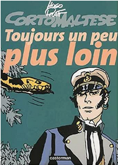

Corto toujours un peu plus loin est le second album de la série Corto Maltese. Les différentes histoires le composant paraissent dans Pif Gadget de 1970 à 1971, et seront publiées dans un seul album en 1972.
L'histoire se déroule en 1917 au Venezuela, dans les Antilles, au Honduras et en Amazonie. Corto, avec son ami Steiner, rencontre l'antiquaire Levi Colombia, qui apparaîtra dans d'autres épisodes, et abordent divers sujets, tel l'Eldorado, les cités de Cibola, et les civilisation perdues d'Amérique du Sud. Par la suite, dans des hitoires annexes parfois détachées de la précédente, Corto visite divers lieux, du delta de l'Orénoque à la Barbade. Il retrouve plusieurs personnages ddéjà rencontrés dans l'album précédent, tel que Bouche dorée, sorcière de la Macumba Brésilienne, où Soledad Lokäarth, jeune femme vivant au Honduras Britannique. Il fera aussi la connaissance de Venexiana Stevenson, espionne qui réapparaîtra dans Les Celtiques et La Maison Dorée de Samarkand.
